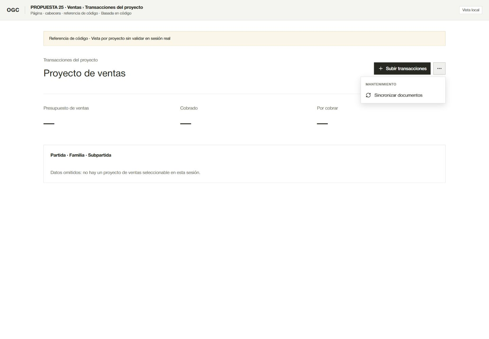

Límite de acceso
Vista real por proyecto pendiente
No había un proyecto de Ventas seleccionable en esta sesión.
La propuesta se basa en la implementación actual; no se presenta un antes ficticio.
Ver evidencia del acceso disponible
Propuesta · simulación

Propuesta: Mantener Subir transacciones visible y reunir mantenimiento en «…». Usar el detalle de transacción como acceso a conceptos y documentos.
Beneficio: La misma jerarquía de acciones que en obra.
Conservar: Simulación basada en código; no representa una captura real de un proyecto. Conservar los accesos actuales a detalles, conceptos y documentos y las confirmaciones de eliminación.